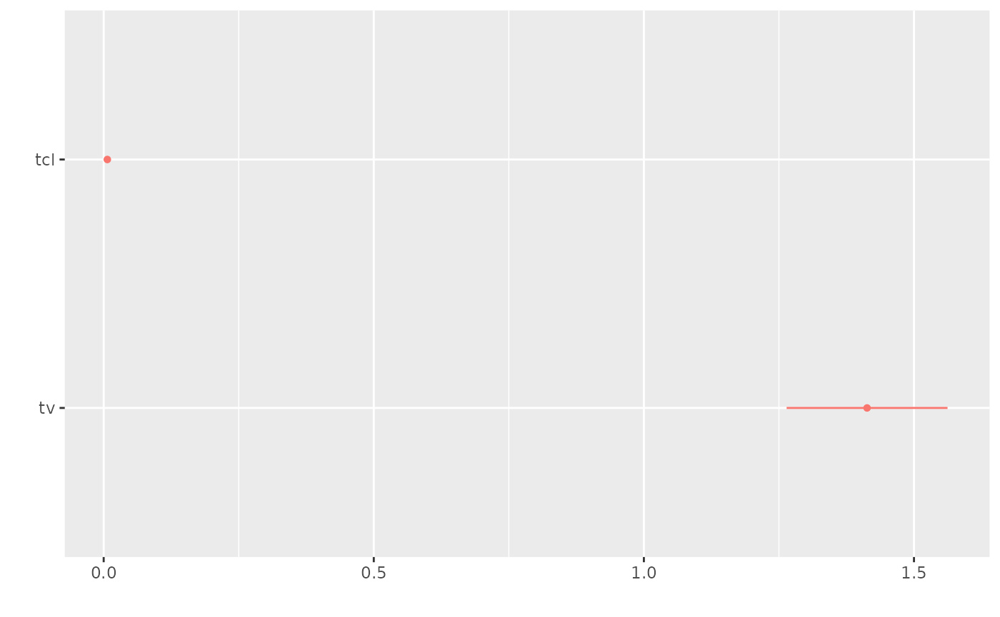

nlmixr
The broom and broom.mixed packages
broom and broom.mixed are packages that attempt to put standard model outputs into data frames. nlmixr supports the tidy and glance methods but does not support augment at this time.
Using a model with a covariance term, the Phenobarbital model, we can explore the different types of output that is used in the tidy functions.
To explore this, first we run the model:
library(nlmixr2)
library(broom.mixed)
pheno <- function() {
# Pheno with covariance
ini({
tcl <- log(0.008) # typical value of clearance
tv <- log(0.6) # typical value of volume
## var(eta.cl)
eta.cl + eta.v ~ c(1,
0.01, 1) ## cov(eta.cl, eta.v), var(eta.v)
# interindividual variability on clearance and volume
add.err <- 0.1 # residual variability
})
model({
cl <- exp(tcl + eta.cl) # individual value of clearance
v <- exp(tv + eta.v) # individual value of volume
ke <- cl / v # elimination rate constant
d/dt(A1) = - ke * A1 # model differential equation
cp = A1 / v # concentration in plasma
cp ~ add(add.err) # define error model
})
}
## We will run it two ways to allow comparisons
fit.s <- nlmixr(pheno, pheno_sd, "saem", control=list(logLik=TRUE, print=0),
table=list(cwres=TRUE, npde=TRUE))
#> [====|====|====|====|====|====|====|====|====|====] 0:00:00
#>
#> [====|====|====|====|====|====|====|====|====|====] 0:00:00
#>
#> [====|====|====|====|====|====|====|====|====|====] 0:00:00
#>
#> [====|====|====|====|====|====|====|====|====|====] 0:00:00
#>
#> [====|====|====|====|====|====|====|====|====|====] 0:00:00
#>
#> [====|====|====|====|====|====|====|====|====|====] 0:00:00
#>
#> [====|====|====|====|====|====|====|====|====|====] 0:00:00
#>
#> [====|====|====|====|====|====|====|====|====|====] 0:00:00
#>
#> [====|====|====|====|====|====|====|====|====|====] 0:00:00
#>
#> [====|====|====|====|====|====|====|====|====|====] 0:00:00
#>
#> [====|====|====|====|====|====|====|====|====|====] 0:00:00
#>
#> [====|====|====|====|====|====|====|====|====|====] 0:00:00
#>
#> [====|====|====|====|====|====|====|====|====|====] 0:00:00
#>
#> [====|====|====|====|====|====|====|====|====|====] 0:00:00
#>
#> [====|====|====|====|====|====|====|====|====|====] 0:00:00
#>
#> [====|====|====|====|====|====|====|====|====|====] 0:00:00
#>
#> [====|====|====|====|====|====|====|====|====|====] 0:00:00
fit.f <- nlmixr(pheno, pheno_sd, "focei",
control=list(print=0),
table=list(cwres=TRUE, npde=TRUE))
#> calculating covariance matrix
#> [====|====|====|====|====|====|====|====|====|====] 0:00:00
#> done
#> [====|====|====|====|====|====|====|====|====|====] 0:00:00Glancing at the goodness of fit metrics
Often in fitting data, you would want to glance at the fit to see how well it fits. In broom, glance will give a summary of the fit metrics of goodness of fit:
glance(fit.s)| OBJF | AIC | BIC | logLik | conditionNumber |
|---|---|---|---|---|
| 689 | 986 | 1e+03 | -487 | 7.57 |
Note in nlmixr it is possible to have more than one fit metric (based on different quadratures, FOCEi approximation etc). However, the glance only returns the fit metrics that are current.
If you wish you can set the objective function to the focei objective function (which was already calculated with CWRES).
setOfv(fit.s,"gauss3_1.6")
#> [====|====|====|====|====|====|====|====|====|====] 0:00:00Now the glance gives the gauss3_1.6 values.
glance(fit.s)| OBJF | AIC | BIC | logLik |
|---|---|---|---|
| 729 | 1.03e+03 | 1.04e+03 | -507 |
Of course you can always change the type of objective function that nlmixr uses:
setOfv(fit.s,"FOCEi") # Setting objective function to foceiBy setting it back to the SAEM default objective function of FOCEi, the glance(fit.s) has the same values again:
glance(fit.s)| OBJF | AIC | BIC | logLik |
|---|---|---|---|
| 689 | 986 | 1e+03 | -487 |
For convenience, you can do this while you glance at the objects:
glance(fit.s, type="FOCEi")| OBJF | AIC | BIC | logLik |
|---|---|---|---|
| 689 | 986 | 1e+03 | -487 |
Tidying the model parameters
Tidying of overall fit parameters
You can also tidy the model estimates into a data frame with broom for processing. This can be useful when integrating into 3rd parting modeling packages. With a consistent parameter format, tasks for multiple types of models can be automated and applied.
The default function for this is tidy, which when applied to the fit object provides the overall parameter information in a tidy dataset:
tidy(fit.s)| effect | group | term | estimate | std.error | statistic | p.value |
|---|---|---|---|---|---|---|
| fixed | tcl | -4.99 | 0.0743 | -67.2 | 1 | |
| fixed | tv | 0.346 | 0.0538 | 6.43 | 8.09e-10 | |
| ran_pars | ID | sd__eta.cl | 0.492 | |||
| ran_pars | ID | sd__eta.v | 0.394 | |||
| ran_pars | ID | cor__eta.v.eta.cl | 0.989 | |||
| ran_pars | Residual(add) | add.err | 2.83 |
Note by default these are the parameters that are actually estimated in nlmixr, not the back-transformed values in the table from the printout. Of course, with mu-referenced models, you may want to exponentiate some of the terms. The broom package allows you to apply exponentiation on all the parameters, that is:
## Transformation applied on every parameter
tidy(fit.s, exponentiate=TRUE) | effect | group | term | estimate | std.error | statistic | p.value |
|---|---|---|---|---|---|---|
| fixed | tcl | 0.00677 | 0.000503 | 13.5 | 7.75e-28 | |
| fixed | tv | 1.41 | 0.076 | 18.6 | 5.66e-41 | |
| ran_pars | ID | sd__eta.cl | 0.492 | |||
| ran_pars | ID | sd__eta.v | 0.394 | |||
| ran_pars | ID | cor__eta.v.eta.cl | 0.989 | |||
| ran_pars | Residual(add) | add.err | 2.83 |
Note:, in accordance with the rest of the broom package, when the parameters with the exponentiated, the standard errors are transformed to an approximate standard error by the formula: \(\textrm{se}(\exp(x)) \approx \exp(\textrm{model estimate}_x)\times \textrm{se}_x\). This can be confusing because the confidence intervals (described later) are using the actual standard error and back-transforming to the exponentiated scale. This is the reason why the default for nlmixr’s broom interface is exponentiate=FALSE, that is:
tidy(fit.s, exponentiate=FALSE) ## No transformation applied| effect | group | term | estimate | std.error | statistic | p.value |
|---|---|---|---|---|---|---|
| fixed | tcl | -4.99 | 0.0743 | -67.2 | 1 | |
| fixed | tv | 0.346 | 0.0538 | 6.43 | 8.09e-10 | |
| ran_pars | ID | sd__eta.cl | 0.492 | |||
| ran_pars | ID | sd__eta.v | 0.394 | |||
| ran_pars | ID | cor__eta.v.eta.cl | 0.989 | |||
| ran_pars | Residual(add) | add.err | 2.83 |
If you want, you can also use the parsed back-transformation that is used in nlmixr tables (ie fit$parFixedDf). Please note that this uses the approximate back-transformation for standard errors on the log-scaled back-transformed values.
This is done by:
## Transformation applied to log-scaled population parameters
tidy(fit.s, exponentiate=NA)| effect | group | term | estimate | std.error | statistic | p.value |
|---|---|---|---|---|---|---|
| fixed | tcl | 0.00677 | 0.000503 | 13.5 | 7.75e-28 | |
| fixed | tv | 1.41 | 0.076 | 18.6 | 5.66e-41 | |
| ran_pars | ID | sd__eta.cl | 0.492 | |||
| ran_pars | ID | sd__eta.v | 0.394 | |||
| ran_pars | ID | cor__eta.v.eta.cl | 0.989 | |||
| ran_pars | Residual(add) | add.err | 2.83 |
Also note, at the time of this writing the default separator between variables is ., which doesn’t work well with this model giving cor__eta.v.eta.cl. You can easily change this by:
| effect | group | term | estimate | std.error | statistic | p.value |
|---|---|---|---|---|---|---|
| fixed | tcl | -4.99 | 0.0743 | -67.2 | 1 | |
| fixed | tv | 0.346 | 0.0538 | 6.43 | 8.09e-10 | |
| ran_pars | ID | sd__eta.cl | 0.492 | |||
| ran_pars | ID | sd__eta.v | 0.394 | |||
| ran_pars | ID | cor__eta.v..eta.cl | 0.989 | |||
| ran_pars | Residual(add) | add.err | 2.83 |
This gives an easier way to parse value: cor__eta.v..eta.cl
Adding a confidence interval to the parameters
The default R method confint works with nlmixr fit objects:
confint(fit.s)| model.est | estimate | 2.5 % | 97.5 % |
|---|---|---|---|
| -4.99 | 0.00677 | -5.14 | -4.85 |
| 0.346 | 1.41 | 0.24 | 0.451 |
| 2.83 | 2.83 |
This transforms the variables as described above. You can still use the exponentiate parameter to control the display of the confidence interval:
confint(fit.s, exponentiate=FALSE)| model.est | estimate | 2.5 % | 97.5 % |
|---|---|---|---|
| -4.99 | 0.00677 | -5.14 | -4.85 |
| 0.346 | 1.41 | 0.24 | 0.451 |
| 2.83 | 2.83 |
However, broom has also implemented it own way to make these data a tidy dataset. The easiest way to get these values in a nlmixr dataset is to use:
tidy(fit.s, conf.level=0.9)| effect | group | term | estimate | std.error | statistic | p.value | conf.low | conf.high |
|---|---|---|---|---|---|---|---|---|
| fixed | tcl | -4.99 | 0.0743 | -67.2 | 1 | -5.12 | -4.87 | |
| fixed | tv | 0.346 | 0.0538 | 6.43 | 8.09e-10 | 0.257 | 0.434 | |
| ran_pars | ID | sd__eta.cl | 0.492 | |||||
| ran_pars | ID | sd__eta.v | 0.394 | |||||
| ran_pars | ID | cor__eta.v..eta.cl | 0.989 | |||||
| ran_pars | Residual(add) | add.err | 2.83 |
exponentiate, by default the estimated scale.
If you want to have the confidence on the adaptive back-transformed scale, you would simply use the following:
tidy(fit.s, conf.level=0.9, exponentiate=NA)| effect | group | term | estimate | std.error | statistic | p.value | conf.low | conf.high |
|---|---|---|---|---|---|---|---|---|
| fixed | tcl | 0.00677 | 0.000503 | 13.5 | 7.75e-28 | 0.00599 | 0.00765 | |
| fixed | tv | 1.41 | 0.076 | 18.6 | 5.66e-41 | 1.29 | 1.54 | |
| ran_pars | ID | sd__eta.cl | 0.492 | |||||
| ran_pars | ID | sd__eta.v | 0.394 | |||||
| ran_pars | ID | cor__eta.v..eta.cl | 0.989 | |||||
| ran_pars | Residual(add) | add.err | 2.83 |
Extracting other model information with tidy
The type of information that is extracted can be controlled by the effects argument.
Extracting only fixed effect parameters
The fixed effect parameters can be extracted by effects="fixed"
tidy(fit.s, effects="fixed")| effect | term | estimate | std.error | statistic | p.value |
|---|---|---|---|---|---|
| fixed | tcl | -4.99 | 0.0743 | -67.2 | 1 |
| fixed | tv | 0.346 | 0.0538 | 6.43 | 8.09e-10 |
Extracting only random parameters
The random standard deviations can be extracted by effects="ran_pars":
tidy(fit.s, effects="ran_pars")| effect | group | term | estimate |
|---|---|---|---|
| ran_pars | ID | sd__eta.cl | 0.492 |
| ran_pars | ID | sd__eta.v | 0.394 |
| ran_pars | ID | cor__eta.v..eta.cl | 0.989 |
| ran_pars | Residual(add) | add.err | 2.83 |
Extracting random values (also called ETAs)
The random values, or in NONMEM the ETAs, can be extracted by effects="ran_vals" or effects="random"
| effect | group | level | term | estimate |
|---|---|---|---|---|
| ran_vals | ID | 1 | eta.cl | -0.0743 |
| ran_vals | ID | 2 | eta.cl | -0.212 |
| ran_vals | ID | 3 | eta.cl | 0.261 |
| ran_vals | ID | 4 | eta.cl | -0.537 |
| ran_vals | ID | 5 | eta.cl | 0.316 |
| ran_vals | ID | 6 | eta.cl | -0.125 |
This duplicate method of running effects is because the broom package supports effects="random" while the broom.mixed package supports effects="ran_vals".
Extracting random coefficients
Random coefficients are the population fixed effect parameter + the random effect parameter, possibly transformed to the correct scale.
In this case we can extract this information from a nlmixr fit object by:
| effect | group | level | term | estimate |
|---|---|---|---|---|
| ran_coef | ID | 1 | tcl | -5.07 |
| ran_coef | ID | 2 | tcl | -5.21 |
| ran_coef | ID | 3 | tcl | -4.73 |
| ran_coef | ID | 4 | tcl | -5.53 |
| ran_coef | ID | 5 | tcl | -4.68 |
| ran_coef | ID | 6 | tcl | -5.12 |
exponentiate argument:
| effect | group | level | term | estimate |
|---|---|---|---|---|
| ran_coef | ID | 1 | tcl | 0.00629 |
| ran_coef | ID | 2 | tcl | 0.00548 |
| ran_coef | ID | 3 | tcl | 0.00879 |
| ran_coef | ID | 4 | tcl | 0.00396 |
| ran_coef | ID | 5 | tcl | 0.00929 |
| ran_coef | ID | 6 | tcl | 0.00598 |
| effect | group | level | term | estimate |
|---|---|---|---|---|
| ran_coef | ID | 1 | tcl | 0.00629 |
| ran_coef | ID | 2 | tcl | 0.00548 |
| ran_coef | ID | 3 | tcl | 0.00879 |
| ran_coef | ID | 4 | tcl | 0.00396 |
| ran_coef | ID | 5 | tcl | 0.00929 |
| ran_coef | ID | 6 | tcl | 0.00598 |
Example of using a tidy model estimates for other packages
Dotwhisker
As explained above, this standard format makes it easier for tidyverse packages to interact with model information. An example of this is piping the tidy information to dplyr to filter the effects and then to the dotwhisker package to plot the model parameter confidence intervals.
options(broom.mixed.sep2=": ", broom.mixed.sep2=", ")
library(ggplot2)
library(dotwhisker)
library(dplyr)
fit.s %>%
tidy(exponentiate=NA) %>%
filter(effect=="fixed") %>%
dwplot()
Huxtable
This allows easy creation of report ready tables in many formats including word.
Huxtable relies on the broom implementation
| Phenobarbitol | |
|---|---|
| tcl | -4.995 |
| (0.074) | |
| tv | 0.346 *** |
| (0.054) | |
| sd__eta.cl | 0.492 |
| (NA) | |
| sd__eta.v | 0.394 |
| (NA) | |
| cor__eta.v, eta.cl | 0.989 |
| (NA) | |
| add.err | 2.834 |
| (NA) | |
| N | 155 |
| logLik | -486.775 |
| AIC | 985.550 |
| *** p < 0.001; ** p < 0.01; * p < 0.05. | |
You can also use huxtable to compare runs:
huxreg('SAEM'=fit.s, 'FOCEi'=fit.f)| SAEM | FOCEi | |
|---|---|---|
| tcl | -4.995 | -5.006 |
| (0.074) | (0.083) | |
| tv | 0.346 *** | 0.330 *** |
| (0.054) | (0.061) | |
| sd__eta.cl | 0.492 | 0.502 |
| (NA) | (NA) | |
| sd__eta.v | 0.394 | 0.396 |
| (NA) | (NA) | |
| cor__eta.v, eta.cl | 0.989 | 0.980 |
| (NA) | (NA) | |
| add.err | 2.834 | 2.811 |
| (NA) | (NA) | |
| N | 155 | 155 |
| logLik | -486.775 | -486.773 |
| AIC | 985.550 | 985.546 |
| *** p < 0.001; ** p < 0.01; * p < 0.05. | ||
A word-based table can also be easily created with the tool:
library(officer)
library(flextable)
ft <- huxtable::as_flextable(tbl);
read_docx() %>%
flextable::body_add_flextable(ft) %>%
print(target="pheno.docx")Which produces the following word document.
Happy tidying!